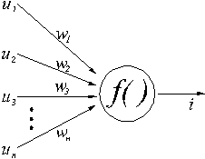
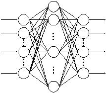
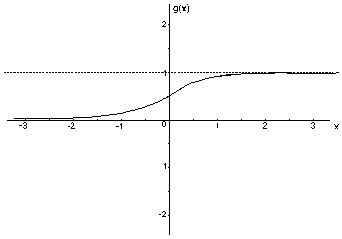

Autor: Velibor Ilić
Abstrakt: Istorijat razvoja neuronskih mreža. Šta su neuronske mreže? Model veštačkog neurona, model neuronske mreže. Razlike između neuronskih mreža i klasičnih računara i primene.
Abstract: History of neural networks. What are neural networks. Model of artificial neuron, model of artificial neural network. Differences between classical algorithms and neural networks.
Datum izrade: Novembar, 1999
Istorijat neuronskih mreža
Šta su neuronske mreže
Model veštačkog neurona
Model neuronske mreže
Aktivacione funkcije
Težinski koeficijenti
Obučavanje neuronskih mreža
Realizacija neuronskih mreža
Podela neuronskih mreža
Mogućnosti neuronskih mreža
Razlike između neuronskih mreža i klasičnih računara
Načini implementacije neuronskih mreža
Domeni primene
ANN - program za obučavanje neuronskih mreža
OCR - program za prepoznavanje ćiriličnih slova primenom neuronskih mreža
Početak neuro-računarstva obično se vezuje za 1943. godinu i članak Warrena McCullocha i Waltera Pittsa “Logički račun ideja svojstvenih nervnoj aktivnosti”. Ovaj članak je često citiran. Kibernetičar Norbert Winer i matematičar John von Neumann su smatrali da bi istraživanja na polju računarstva, inspirisana radom ljudskog mozga, mogla biti izuzetno zanimljiva.
Knjiga Donalda Hebb-a iz 1949. godine “The Organization of behavior” (Organizacija ponašanja) iskazuje ideju da je klasično psihološko uslovljeno ponašanje prisutno kod svih životinja, jer je ono svojstvo neurona. Ova ideja nije bila nova, ali ju je Hebb više
razradio od prethodnika, predlažući određeni zakon učenja za sinapse, a pomoću njega je izveo kvalitativno objašnjenje nekih eksperimentalnih rezultata iz psihologije.
Početkom pedesetih godina, najviše uticaja na dalji razvoj neuronskih mreža je imao rad Marvin Minsky-a koji je u tom periodu konstruisao neuroračunar pod imenom Snark (1951). Frank Rosenblatt je zaslužan za otkriće jednoslojne neuronske mreže, zvane perceptron. Ovaj računar je mogao uspešno da podešava težinske koeficijente, međutim ovaj računar nije postigao značajnije praktične rezultate. Tek krajem pedesetih godina (1957-1958), Frank Rosenblatt i Charles Wightman sa svojim saradnicima su uspeli da razviju računar pod nazivom Mark I koji predstavlja prvi neuroračunar. Nešto posle Rosenblatta, Bernard Widrow je sa svojim studentima (najpoznatiji je Ted Hoff, kasnije tvorac mikroprocesora) razradio novi tip “neurona” - ADALINE (ADAptivini LINearni Element, prenosna funkcija f(x)=x) i odgovarajući zakon učenja.
U periodu od 1950-tih do ranih 1960-tih godina napisano je nekoliko knjiga i osnovano nekoliko kompanija koje se bave neuroračunarima. Međutim, sredinom 1960-tih godina došlo je do zastoja zbog dva očigledna problema. Prvo, većina istraživača je prišla problemu sa kvalitativne i eksperimentalne strane, zanemarujući analitički pristup. Drugo, početni entuzijazam je bio toliko jak da su uveliko publikovana predviđanja da nas od veštačkog mozga deli samo nekoliko godina istraživanja. Ovakav zanos je dalje diskreditovao ovu oblast i odbio veliki broj istraživača. Mnogi od ovih ljudi su napustili neuroračunarstvo i prešli u srodna polja.
Sredinom 1960-ih godina je pristup rešavanja problema neuronskih mreža okarakterisan kao pogrešan, nakon što Marvin Minsky i Seyour Papert u knjizi “Perceptrons” objavljuju matematički dokaz da jednoslojna neuronska mreža “Perceptron” ne može da nauči funkciju XOR,
uz pretpostavku da dodavanjem više slojeva neurona taj problem neće biti prevaziđen. Tačno je da neuron nije u stanju da izvede pomenutu funkciju, ali za iole složeniju mrežu od nekoliko neurona to predstavlja veoma jednostavan zadatak. Njihov dokaz je diskreditovao istraživanja neuronskih mreža, a finansiranja su preusmerena na druge oblasti veštačke inteligencije.
U periodu između 1967. do 1982. godine pojavljuju se istraživači koji daju značajan doprinos razvoju ove oblasti kao što su Teuvo Kohonen, Kunihiko Fukushima i Stephnen Grossberg. Naročito se istakao Teuvo Kohonen, koji je otkrio nekoliko tipova neuronskih mreža koje su po njemu dobile naziv. U ovom periodu se pojavio i backpropagation algoritam. U radu na ovom algoritmu su se posebno istakli sledeći načunici: Amari (1967.) dodaje unutrašnje slojeve perceptronskoj mreži, Bryson i Ho (1969.) razvijaju algoritam sličan backpropagation algoritmu, Werbos (1974) nezavisno od prethodnika razvija backpropagation algoritam, a Parker (1982) unapređuje backpropagation algoritam. Početkom 80-ih, američka vojna agencija DARPA (Agencija za odbrambene istraživačke projekte) postala je zainteresovana za NM i finansiranja su ponovo započela. Sredinom 80-tih, poznati fizičar John Hopfield dao je veliki doprinos popularizaciji neuronskih mreža, objavljujući rad u kome je napravio paralelu između neuronskih mreža i određenih fizičkih sistema. Početkom devedesetih, Bart Kosko u knjizi “Neural Networks and Fuzzy Systems” dokazuje da neuronske mreže i fuzzy logika opisuju isti skup problema i samim tim otvara novu oblast koja se naziva soft computing.
Rumenel, Hinton i Williams (1986) dokazuju veliku promenljivost i potencijal backpropagation algoritma. Krajem 80-tih i početkom 90-tih, neuronske mreže i neuro računarstvo se uvodi kao predmet na nekoliko elitnih univerziteta u SAD, dok se danas neuronske mreže gotovo mogu sresti na svim univerzitetima.
Iako su NM imale neobičnu istoriju, one su još uvek u ranoj fazi razvoja. Možda se sad može reći da smo na kraju početka. Danas NM nalaze veoma širok spektar primena u različitim praktičnim oblastima.
Postoje dve kategorije neuronskih mreža:
veštačke i biološke neuronske mreže. Predstavnik bioloških neuronskih mreža je nervni sistem živih bića. Veštačke neuronske mreže su po strukturi, funkciji i obradi informacija slične biološkim neuronskim mrežama, ali se radi o veštačkim tvorevinama. Neuronska mreža u računarskim naukama predstavlja veoma povezanu mrežu elemenata koji obrađuju podatke. One su sposobne da izađu na kraj sa problemima koji se tradicionalnim pristupom teško rešavaju, kao što su govor i prepoznavanje oblika. Jedna od važnijih osobina neuronskih mreža je njihova sposobnost da uče na ograničenom skupu primera.
U ovom radu, kada se govori o neuronskim mrežama, misli se prvenstveno na “veštačke neuronske mreže” (engleski termin Artificial Neural Networks skraćeno ANN), zbog toga što se uglavnom govori o modelima neuronskih mreža (skraćeno NM), realizovanim na računarima.
U stručnoj literaturi, nije redak slučaj da se izostavlja reč “veštačke” iako se misli na njih. Biološke neuronske mreže su daleko komplikovanije od svojih matematičkih modela koji se koriste za veštačke neuronske mreže.
NM predstavljaju sistem sastavljen od veoma velikog broja jednostavnih elemenata za obradu podataka. Ovakvi sistemi su sposobni za prikupljanje, memorisanje i korišćenje eksperimentalnog znanja. Ne postoji jedinstvena definicija neuronskih mreža. Međutim, većina
ljudi bi neuronske mreže definisala na sledeći način:
Neuronska mreža je sistem sastavljen od više jednostavnih procesora (jedinica, neurona), svaki od njih ima lokalnu memoriju u kojoj pamti podatke koje obrađuje. Te jedinice su povezane komunikacionim kanalima (vezama). Podaci koji se ovim kanalima razmenjuju su obično numerički. Jedinice obrađuju samo svoje lokalne podatke i ulaze koje primaju preko konekcije. Ograničenja lokalnih operatora se mogu otkloniti tokom treninga.
Veliki broj NM su nastale kao modeli bioloških neuronskih mreža. Istorijski gledano, inspiracija za razvoj NM proizilazi iz želje da se konstruiše veštački sistem sposoban za prefinjeno, možda “inteligentno”, izračunavanje na sličan način kao što to ljudski mozak rutinski izvodi. Potencijalno, NM nam pružaju mogućnost za razumevanje rada ljudskog mozga.
Veštačke neuronske mreže su kolekcija matematičkih modela koji simuliraju neke od posmatranih osobina bioloških nervnih sistema i povlače sličnosti sa prilagodljivim biološkim učenjem. Sačinjene su od velikog broja međusobno povezanih neurona (obrađujućih
elemenata) koji su, slično biološkim neuronima, povezani svojim vezama koje sadrže propusne (težinske) koeficijente, koje su po ulozi slične sinapsama.
Učenje se kod bioloških sistema obavlja putem regulisanja sinaptičkih veza koje povezuju aksone i dendrite neurona. Učenje tipičnih događaja putem primera se ostvaruje preko treninga ili otkrića do tačnih setova podataka ulaza-izlaza koji treniraju algoritam
ponavljanjem podešavajući propusne (težinske) koeficijente veza (sinapse). Ove veze memorišu znanje neophodno za rešavanje specifičnog problema.
Većina NM ima neku vrstu pravila za “obučavanje”, čime se koeficijenti veza između neurona podešavaju na osnovu ulaznih podataka.
Drugim rečima, NM “uče” preko primera (kao što deca uče da prepoznaju konkretan predmet, objekat, proces ili pojavu preko odgovarajućih primera) i poseduju sposobnost za generalizaciju posle trening podataka.
Veliki potencijal NM se nalazi u mogućnosti paralelne obrade podataka, tokom izračunavanja komponenti koje su nezavisne jedne od drugih. Neuronske mreže su sistemi sastavljeni od više jednostavnih elemenata (neurona) koji obrađuju podatke paralelno. Funkcije koje su NM u stanju da obrađuju određene su strukturom mreže, jačinom konekcije a obrada podataka se izvodi u neuronima. Svaki elemenat operiše samo lokalnim informacijama. Svaki elemenat radi asinhrono, kao da nema sistemskog
sata.
Iako NM postoje od 1940-tih godina, one nisu imale značajniju praktičnu primenu sve do 1980-tih, kada su algoritmi postali dovoljno prefinjeni za opštu upotrebu (aplikacije). Danas se NM primenjuju za rešavanje sve većeg broja svakodnevnih problema sa značajnom
kompleksnošću. U programiranju se mogu koristiti kao “generator” (engleski engine) koji je u stanju da vrši različita prepoznanja i klasifikacije i koji ima sposobnost da izvrši generalizaciju prilikom odlučivanja pri nepreciznim ulaznim podacima. NM nude idealno rešenje za raznovrsno klasifikovanje problema, kao što je prevođenje teksta u govor, prepoznavanje slova, rešavanje problema za koje ne postoji algoritamsko rešenje. Pokazuju dobre rezultate prilikom predviđanja i modelovanja sistema gde fizički procesi nisu jasni
ili su veoma kompleksni. Prednost NM leži u visokoj elastičnosti prema poremećajima u ulaznim podacima i u sposobnosti da uči. NM često uspešno rešava probleme koji su previše kompleksni za konvencionalne tehnologije (na primer, problem koji nema algoritamsko rešenje ili za koji je algoritam previše komplikovan da bi bio pronađen) i one su često dobra pratnja problemima koje ljudi rešavaju.
Veštački neuroni, kao i biološki, imaju jednostavnu strukturu i imaju slične funkcije kao i biološki neuroni. Telo
neurona se naziva čvor ili jedinica.

u1..n – ulazni podaci
w1..n – težinski koeficijenti
f( ) – aktivaciona funkcija
i – izlazni podatak
Neuronsku mrežu čine:
- arhitektura (topologija) mreže, odnosno šema vezivanja neurona
- prenosna funkcija neurona
- zakoni učenja
Arhitekturu veštačke neuronske mreže predstavlja specifično uređenje i povezivanje neurona u obliku mreže. Po arhitekturi, neuronske mreže se razlikuju prema broju neuronskih slojeva. Obično svaki sloj prima ulaze iz prethodnog sloja, a svoje izlaze šalje narednom sloju.
Prvi sloj se naziva ulazni, poslednji je izlazni, ostali slojevi se obično nazivaju skrivenim slojevima. Jedna od najčešćih arhitektura neuronskih mreža je mreža sa tri sloja. Prvi sloj (ulazni) je jedini sloj koji prima signale iz okruženja. Prvi sloj prenosi signale sledećem sloju (skriveni sloj) koji obrađuje ove podatke i izdvaja osobine i šeme iz primljenih signala. Podaci koji se smatraju važnim se upućuju izlaznom sloju, poslednjem sloju mreže. Na izlazima neurona trećeg sloja se dobijaju konačni rezultati obrade. Složenije neuronske mreže mogu imati više skrivenih slojeva, povratne petlje i elemente za odlaganje vremena, koji su dizajnirani da omoguće
što efikasnije odvajanje važnih osobina ili šema sa ulaznog nivoa.

Slika Model neuronske mreže
Učenje NM se svodi na učenje iz primera kojih bi trebalo da bude što više da bi mreža mogla da se ponaša preciznije u kasnijoj eksploataciji. Proces učenja dovodi do korigovanja sinaptičkih težina. Kada uzorci koji se predstavljaju mreži ne dovode više do promene
ovih koeficijenata, smatra se da je mreža obučena.
Postoji tri tipa obučavanja:
- nadgledano obučavanje - mreži se predstavljaju ulazni podaci i očekivani izlazni podaci
- obučavanje ocenjivanjem - mreži se ne predstavljaju očekivani izlazni podaci nego joj se posle izvesnog vremena predstavlja
ocena prethodnog rada. Jedan od primera je mreža koja uči da balansira štap. Kad god štap padne, mreži se prosleđuje ocena prethodnog rada, na primer, u obliku ugaonog odstupanja štapa od ravnoteže.
- samoorganizacija - mreži se predstavljajuisključivo ulaz
Aktivacione funkcije neurona na skrivenim slojevima su potrebne da bi mreža bila u stanju da nauči nelinearne funkcije. Bez nelinearnosti, neuroni skrivenih slojeva ne bi imali veće mogućnosti od obične perceptronske mreže (koja se sastoji samo od ulaza i izlaza). Kombinovanjem linearnih funkcija se ponovo dobija linearna funkcija. Zbog toga se na izlazu neurona nalazi aktivaciona funkcija koja je najčešće nelinearna. Ova nelinearnost čini mreže sa više slojeva naročito moćnima. Gotovo svaka nelinearna funkcija može da se koristi, mada se za backpropagation algoritam najčešće koriste sigmoidne funkcije kao što su logistička, arcustangens ili gausova funkcija.
Za neurone na izlaznom sloju se mogu birati aktivacione funkcije koje odgovaraju raspodeli ciljnih vrednosti. Granične aktivacione funkcije, kakva je logistička, su naročito korisne kada su ciljne vrednosti ograničene. Ali ako ciljne vrednosti nemaju ograničene
vrednosti, bolje je da se koristi aktivaciona funkcija koja nije ograničena. Ako su ciljne vrednosti pozitivne ali nemaju gornju granicu, najbolje je koristiti eksponencijalnu aktivacionu funkciju. Postoji izvesna prirodna povezanost između izlaznih aktivacionih funkcija i različite raspodele šuma koji se izučava statistički u kontekstu generalizacije izlaznog modela.

Sinapse kojima biološki neuroni regulišu prohodnost određene putanje između aksona i dendrita, kod veštačkih neurona se ostvaruju
preko prilagodljivih težinskih koeficijenata (engleski weight) ili težina veza. Kada se na ulaz neurona dovedu neke vrednosti i pomnože težinskim koeficijentima, dobijaju se ulazni podaci. Zbir ulaznih vrednosti neurona pomnoženih sa odgovarajućim težinskim koeficijentima se propušta kroz aktivacionu funkciju i ta vrednost predstavlja izlaz iz neurona. Iako neuroni imaju prilično jednostavne (linearne) funkcije, kada se povežu u višeslojnu mrežu, u stanju su da obrade veoma složene (nelinearne) funkcije.
Neuroni na skrivenim i izlaznim slojevima pored težinskih koeficijenata koriste i koeficijent “threshold” (“bias”) u računanju mrežnih ulaznih vrednosti. Koeficijent threshold se može tretirati kao dodatni težinski koeficijent na ulazu koji ima konstantnu težinu jedan.
Rukovanje ovim koeficijentom je slično kao i za svaki drugi težinski koeficijent.
Prirodni neuroni su znatno komplikovaniji od veštačkih. Iako su veštački neuroni, izvedeni u VLSI tehnologiji, znatno brži od
prirodnih, visok stepen međusobne povezanosti, njihov ogroman broj i još veći broj veza između njih, čine biološke nervne sisteme nedostižnim za današnju tehnologiju i nepotpuno razumljivim za današnju nauku. Uz to, mala je verovatnoća da će principijelna šema stotine
milijardi veza biti za dogledno vreme analizirana. Šta više, mi još uvek ne znamo kako da protumačimo težinske koeficijente čak i u mrežama od samo nekoliko neurona.
U svim biološkim neuronskim mrežama veze između pojedinačnog dendrita i aksona mogu biti pojačane ili oslabljene. Na primer, veze mogu postati pojačane ako se više signala šalje kroz njih, ili mogu biti oslabljene ako se signali ređe šalju kroz njih. Pojačavanje određenog
neuralnog prolaza, ili veze između dendrita i aksona, rezultuje u povećanoj verovatnoći da će signal biti prenesen kroz tu putanju, daljim pojačavanjem tog puta. Putevi između neurona koji su retko korišteni polako atrofiraju, ili se umanjuju, praveći manju verovatnoću da će signal biti prenesen kroz njih.
Slična situacija se pojavljuje i kod veštačkih neurona. Podaci iz trening skupa se periodično propuštaju kroz NM. Dobijene vrednosti na izlazu mreže se upoređuju sa očekivanim. Ukoliko postoji razlika između dobijenih i očekivanih podataka, prave se modifikacije na vezama
između neurona u cilju smanjivanja razlike trenutnog i željenog izlaza. Ulazno-izlazni skup se ponovo predstavlja mreži zbog daljih podešavanja težina, pošto u prvih nekoliko koraka mreža obično daje pogrešan rezultat. Posle podešavanja težina puta za sve ulazno izlazne šeme u trening skupu, mreža nauči da reaguje na željeni način.
NM je obučena ako može tačno da rešava zadatke za koje je obučavana. NM je sposobna da izdvoji važne osobine i šeme u klasi trening primera. Nakon obučavanja sa određenom verovatnoćom, NM može da generalizuje nove ulazne podatke za koje nije obučavana. Na primer, generalizaciju možemo videti na primeru mreže obučavane da prepoznaje serije slika: ako na ulaz takve mreže dovedemo slike za koje mreža nije obučavana, ona do izvesne mere može uspešno da klasifikuje takve slike.
Najčešće korišten algoritam za obučavanje NM je backpropagation, razvijen nezavisno od strane naučnika: Paul Werbos (1974), David Parker (1984/1985), i David Rumelhart, Ronald Williams, i drugih (1985). Backpropagation uči šeme poredeći izlaz neuronske mreže sa željenim izlazom i računa greške za svaki čvor u mreži. Neuronska mreža podešava težine veza prema vrednostima greške dodeljenim za svaki čvor.
Izračunavanje počinje od izlaznog sloja, preko skrivenih slojeva, prema ulaznom sloju. Nakon modifikacije parametara, na mrežu se dovode novi ulazi. Obučavanje se prekida tek kada mreža bude u stanju da daje izlaze sa zadovoljavajućom
tačnošću.
Neuronska mreža se može realizovati na dva načina: hardverski i softverski.
Hardverska realizacija: Veštački neuroni su fizički međusobno povezani, oponašajući veze između bioloških neurona. Neuroni se realizuju kao jednostavna integrisana kola. Softverska realizacija: NM se obično simuliraju na tradicionalnim računarima, u kojima je veza između čvorova logička (virtualna).
Svaki od ovih načina realizacije NM ima svoje prednosti kao i mane. Prednost hardverske realizacije je to što može da koristi mogućnost paralelnog procesiranja informacija ukoliko se svakom neuronu u mreži dodeli po jedan procesor. Prednost softverske realizacije NM na standardnom PC računaru je u tome što se lakše uspostavljaju (i kasnije menjaju) veze između pojedinih neurona u mreži. U praksi se softverska realizacija koristi za testiranje, a konkretna realizacija koja se primenjuje u praksi može biti realizovana i hardverski čime se dobija na brzini.
Postoji veliki broj različitih realizacija neuronskih mreža, a samim tim postoji i mnogo podela. NM možemo klasifikovati prema:
- broju slojeva,
- vrsti veza između neurona,
- vrsti obučavanja neuronskih mreža,
- prema smeru prostiranja informacija,
- prema vrsti podataka.
Podela neuronskih mreža prema broju slojeva
Postoji veliki broj različitih tipova NM. Jedna od najopštijih podela NM je prema broju slojeva. Mreže možemo podeliti
na:
- jednoslojne i
- višeslojne.
Danas se uglavnom izučavaju i primenjuju višeslojne NM koje pored ulaznih i izlaznih slojeva sadrže neurone na srednjim (skrivenim)
slojevima.
Podela NM prema vrsti veza
NM se mogu podeliti prema vrstama veza
tj. arhitekturi na:
- slojevite Neuroni su raspoređeni tako da formiraju slojeve. Na ulaz jednog neurona se dovode izlazi svih neurona sa prethodnog
sloja, a njegov izlaz se vodi na ulaze svih neurona na narednom sloju. Neuroni sa prvog (ulaznog) sloja imaju samo po jedan ulaz. Izlazi neurona sa zadnjeg (izlaznog) sloja predstavljaju izlaze mreže. Predstavnik: backpropagation algoritam.
- potpuno povezane Izlaz jednog neurona se vodi ka ulazu svih neurona u mreži. Predstavnik: Hopfildova NM.
- celularne Međusobno su povezani samo susedni neuroni. Bez obzira na lokalnu povezanost, signali se prostiru i na neurone
i van susedstva zbog indirektnog prostiranja informacija. Predstavnik: CNN – Cellular Neural Network.
Vrste obučavanja neuronskih mreža>
Postoje tri različita pristupa obučavanju neuronskih mreža:
- Nadgledano obučavanje - Supervised training
Tokom obučavanja mreže, algoritam koji nadzire obučavanje (supervisor) upoređuje podatke dobivene na izlazu sa
očekivanim podacima. Razlika između dobivenih i očekivanih podataka se šalje proceduri za učenje, koja koriguje težinske koeficijente mreže. Kontrolisan trening je sličan studentu koga profesor vodi u učenju, ukazuje na greške i propuste i usmerava ka željenom cilju. Predstavnici: perceptron, backpropagation algoritam.
- Delimično nadgledano obučavanje
Delimično nadgledano učenje radi na principu da mreža uči samostalno, a povremeno dobija ocenu prethodnog rada. Primer ovakve mreže je mreža koja balansira štap. Dok je štap uspravan sve je u redu, ali kada štap padne, mreža treba
da koriguje ponašanje da bi štap ostao uspravan. Sličan slučaj je i sa partijom šaha. Ukoliko je partija izgubljena znači da je došlo do greške, ali se ne zna u kome trenutku je povučen pogrešan potez, niti koji je potez doveo do gubitka partije.
- Nenadgledano obučavanje - Unsupervised training
U nenadgledanom učenju mreža je nezavisna. Pri obučavanju se predstavljaju samo ulazni podaci koje NM pokušava da generalizuje i “uoči” zajedničke osobine. Predstavnik: Kohonenove samoorganizujuće mape.
Podela neuronskih mreža prema smeru prostiranja informacija
NM se mogu podeliti prema smeru prostiranja informacija kroz mrežu:
- Feedforward (nerekurzivne, nerekurentne ili nepovratne) - Viši slojevi ne vraćaju informaciju u niže slojeve. Vrše prostiranje signala samo u jednom smeru (od ulaza prema izlazu) odnosno propagaciju signala.Predstavnici: Višeslojni perceptron sa primenjenim
backpropagation algoritmom.
- (Feedback) rekurzivne ili rekurentne ili povratne - Viši slojevi vraćaju informacije nazad u niže slojeve. Izlaz iz neurona se vraća u niže slojeve ili u isti sloj. Predstavnici: Hopfildove, Celularne NM, Kohonenove NM, dvostruko asocijativne NM. Feedback mreže imaju mnogo veće procesne sposobnosti od Feedforward mreža.
Podela neuronskih mreža prema vrsti podataka
Prema vrsti podataka koje obrađuju NM se mogu podeliti na:
Ova podela se retko koristi pošto su gotovo sve NM diskretne.
Vrste neuronskih mreža podeljene prema vrsti učenja i pravcu prostiranje signala:
1. NENADGLEDANO UČENJE
A) Feedback mreže
1) Aditivna Grossbergova - Additive Grossberg (AG)
2) Grossbergova sa odlaganjem - Shunting Grossberg (SG)
3) Teorija binarne adaptivne rezonancije - Binary Adaptive Resonance Theory (ART1)
4) Teorija analogne adaptivne rezonancije - Analog Adaptive Resonance Theory (ART2, ART2a)
5) Diskretna Hopfildova - Discrete Hopfield (DH)
6) Kontinualna Hopfildova - Continuous Hopfield (CH)
7) Diskretna bidirekciona asocijativna memorija - Discrete Bidirectional Associative Memory (BAM)
8) Privremena asocijativna memorija - Temporal Associative Memory (TAM)
9) Adaptivna bidirekciona asocijativna memorija - Adaptive Bidirectional Associative Memory (ABAM)
10) Kohenove samoorganizujuće mape - Kohonen Self-organizing Map/Topology-preserving map (SOM/TPM)
11) Kompetitivno učenje - Competitive learning
B) Feedforward - mreže:
1) Matrice sa mogućnošću učenja- Learning Matrix (LM)
2) Pobuđeno-primorano učenje - Driver-Reinforcement Learning (DR)
3) Linearna asocijativna memorija - Linear Associative Memory (LAM)
4) Optimizovana linearna asocijativna memorija - Optimal Linear Associative Memory (OLAM)
5) Slabo raspoređena distribuirana asocijativna memorija - Sparse Distributed Associative Memory (SDM)
6) Fuzzy ascocijativna memorija - Fuzzy Associative Memory (FAM)
7) Counterpropagation (CPN)
2. NADGLEDANO UČENJE
A) Feedback mreže
1) Brain-State-in-a-Box (BSB)
2) Fuzzy kongitivne mape - Fuzzy Congitive Map (FCM)
3) Bolcmanova mašina - Boltzmann Machine (BM)
4) Mean Field Annealing (MFT)
5) Rekurzivno kaskadno povezivanje - Recurrent Cascade Correlation (RCC)
6) Povratna propagacija kroz vreme - Backpropagation through time (BPTT)
7) Povratno učenje u realnom vremenu - Real-time recurrent learning (RTRL)
8) Recurrent Extended Kalman Filter (EKF)
B) Feedforward-mreže:
1) Perceptron
2) Adaline, Madaline
3) Backpropagation (BP)
4) Košijeva mašina - Cauchy Machine (CM)
5) Adaptivni heuristički kriterijum -
Adaptive Heuristic Critic (AHC)
6) NM sa vremenskim zadržavanjem - Time Delay Neural Network (TDNN)
7) Asocijativno nagrađivanje - Associative Reward Penalty (ARP)
8) Avalanche Matched Filter (AMF)
9) Backpercolation (Perc)
10) Artmap
11) Adaptivne logičke mreže - Adaptive Logic Network (ALN)
12) Kaskadne veze- Cascade Correlation (CasCor)
13) Prošireni Kalman-ov filter - Extended Kalman Filter(EKF)
14) Kvantizacija vektora učenja - Learning Vector Quantization (LVQ)
15) NM zasnovane na verovatnoći- Probabilistic Neural Network (PNN)
16) Opšte regresione NM - General Regression Neural Network (GRNN)
Teoretski se NM mogu obučiti za izračunavanje svake izračunljive funkcije. One mogu uraditi sve što može normalan digitalan
računar da uradi.
Međutim u praksi, NM najbolje rezultate pokazuju na području klasifikacije, funkcije aproksimacije, na problemima mapiranja čija je tolerancija neprecizna, na problemima koji imaju dosta dostupnih podataka za trening ili na problemima koji zahtevaju brzu primenu
odgovarajućeg pravila u zavisnosti od ulaznih podataka. Isto tako mapiranje vektora između prostora može se aproksimirati precizno putem NM. NM ne mogu da stvore informaciju koju ne sadrže trening podaci.
Neuronska mreža se razlikuje od tradicionalnih računara (PC računara, radnih stanica, i mainframe računara) u formi i funkcionisanju. Dok neuronska mreža koristi veliki broj jednostavnih procesora da bi obavila njene kalkulacije, tradicionalni računari koriste jedan ili,
u ređim slučajevima, svega nekoliko veoma kompleksnih procesorskih jedinica. Neuronska mreža ne poseduje centralno lokalizovanu memoriju, niti se programira sekvencama instrukcija, kao svi tradicionalni računari.
Klasični računari koji rade na binarnoj logičkoj osnovi, koriste algoritamski način obrade podataka (sekvencijalni) sa veoma niskim stepenom paralelizacije. U algoritamskom načinu obrade podataka računar obrađuje jednu po jednu informaciju ili u boljem slučaju obrađuje manji broj informacija u isto vreme. Za razliku od ovog pristupa obrade podataka, NM procesira istovremeno više informacija, tj. najbolja
varijanta za NM je da je svaki neuron po jedan procesor. Razvoj NM je doveo do novih arhitektura računara koji se u mnogome razlikuju od računara kakvi su danas rasprostranjeni. Ako bismo posmatrali primer prepoznavanja slova, algoritamsko rešenje bi zahtevalo da se zadato slovo uporedi sa svim slovima u bazi, slovo po slovo, dok NM može da uporedi zadato slovo istovremeno sa svim slovima, a rešenje je slovo sa najvećom verovatnoćom. Ovo je moguće jer se memoriji pristupa uz pomoć sadržaja, a ne adrese.
Kod klasičnih računara su elementi obrade informacija i elementi memorisanja informacija potpuno odvojene komponente. Kod neuronske mreže memorisanje i obrada predstavljaju jednu kompaktnu celinu. Podaci koji su vezani za rad neuronske mreže nemaju nikakav smisao bez jedinica obrade.
Neuronska mreža se razlikuje od tradicionalnih računara po načinu na koji se “programira”. Umesto programa napisanih kao serije instrukcija, kao što to rade klasični računari, može se upotrebiti obučena NM, gde arhitektura i težinski koeficijenti određuju njenu funkciju. Koeficijenti se podešavaju tokom obučavanja na ograničenom skupu karakterističnih primera. Kada se mreža obuči do zadovoljavajuće granice, vrednosti veza se mogu memorisati i koristiti u kasnijem radu.
Kod klasičnih računara softver mora biti gotovo savršen da bi radio. Razvoj softvera zahteva iscrpan dizajn, testiranje i postepeno usavršavanje čine ga dugim i skupim procesom. NM omogućavaju evolutivni razvoj softvera, tj. NM mreža se može naknadno adaptirati realnim
i novo nastalim uslovima. Neuronske mreže imaju sposobnost da menjaju svoju strukturu i funkciju, za razliku od klasičnih algoritama koji nemaju toliku fleksibilnost.
Decentralizovana obrada i memorisanje omogućavaju mreži da nastavi funkcionisanje i u uslovima kada se deo mreže ošteti (jedan deo neurona prestane da funkcioniše ili se neke veze prekinu). Oštećena mreža će i dalje biti u stanju da funkcioniše ali sa smanjenom tačnošću. Mreža je takođe tolerantna i na prisustvo šuma u ulaznom signalu. Svaki memorisani uzorak je delokalizovan, tj. smešten je u celu mrežu. Ova osobina je još jedna veoma važna osobina NM.
Neuronske mreže su obično simulirane na tradicionalnim računarima. Prednost ovog pristupa je u tome što se računari mogu lako reprogramirati da promene arhitekturu ili pravilo učenja simulirane neuronske mreže. Računanje u neuronskoj mreži je uglavnom paralelno, tako da brzina obrade simulirane neuronske mreže može biti znatno uvećana korišćenjem paralelnih procesora.
NM i klasično programiranje mogu se posmatrati kao fundamentalno različiti, ali komplementarni prilazi obradi informacija.
NM su zasnovane na transformacijama, dok je programiranje zasnovano na algoritmima i pravilima.
U početku su NM koristili naučnici računarskih i kognitivnih nauka koji su pokušavali da modeliraju čulni sistem živih organizama. Danas neuronske mreže predstavljaju veoma atraktivnu oblast istraživanja i postoje brojne oblasti u kojima se koriste. Primenjuju
se za:
- prepoznavanje oblika,
- prepoznavanje rukopisa,
- prepoznavanje govora,
- finansijske i ekonomske modele,
- predviđanje kretanja cena na tržištu,
- upravljanje sistemima,
- upravljanje proizvodnim procesima,
- analizu električnih kola,
- psihijatrijske procene,
- kompresovanje podataka,
- naftna istraživanja,
- kriminološka istraživanja,
- analizu medicinskih testova,
- ispitivanje EEG i EKG signala,
- pronalaženje optimalnog rešenja,
- upravljanje robotima,
- analiziranje podataka pri pirolizi i spektroskopiji,
- u bioračunarskim sistemima,
- vremensku prognozu i
- u drugima oblastima.
Primenu neuronskih mreža je moguće podeliti na tri karakteristične oblasti:
- procesiranje senzorskih informacija
- analiza podataka
- kontrola upravljanja
Konkretana primena neuronskih mreža se može videti preko dva realizovana programa (program za prepoznavanje ćiriličnih slova OCR, program za obučavanje neuronskih mreža ANN).
|